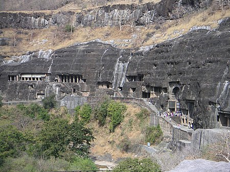
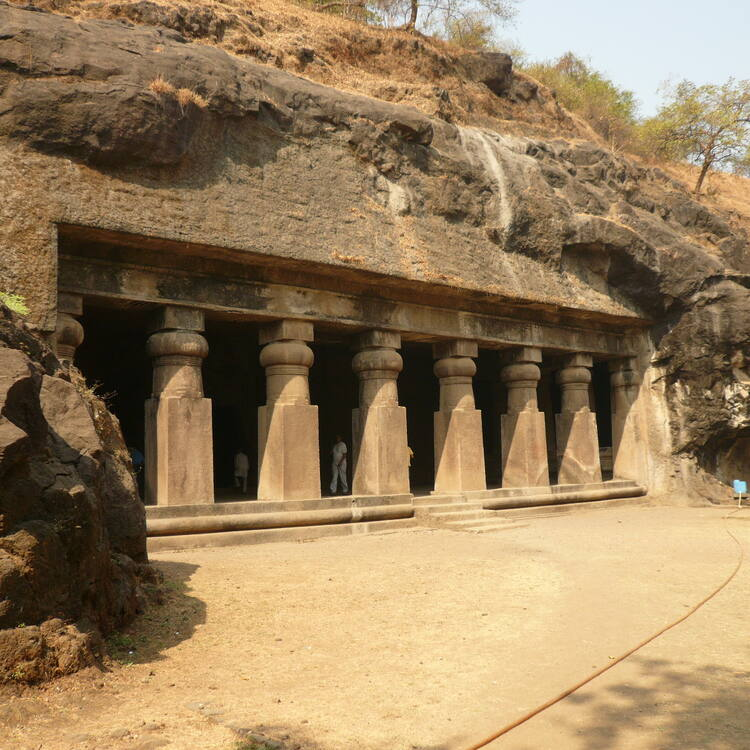

HISTORICAL PLACES IN INDIA UNDER UNESCO
AJANTA CAVES
The Ajanta Caves are approximately 30 rock-cut Buddhist cave monuments dating from the 2nd century BCE to about 480 CE in the Aurangabad district of Maharashtra state in India. The caves include paintings and rock-cut sculptures described as among the finest surviving examples of ancient Indian art, particularly expressive paintings that present emotions through gesture, pose and form
CHHATRAPATHI SHIVAJI TEMPLE
Chhatrapati Shivaji Terminus (officially Chhatrapati Shivaji Maharaj Terminus, formerly Victoria Terminus, Bombay station code: CSMT (mainline)[4]/ST (suburban)), is a historic railway terminus and UNESCO World Heritage Site in Mumbai, Maharashtra, India.
BUDDHIST MONUMENTS AT SANCHI
.jpg)
On a flat-topped sandstone hill that rises some 300 feet (90 metres) above the surrounding country stands India's best-preserved group of Buddhist monuments, collectively designated a UNESCO World Heritage site in 1989. The most noteworthy of the structures is the Great Stupa (stupa no. 1), discovered in 1818.
CHAMPANEER PAVAGHAD ARCHEOLOGICAL PARK
.jpg)
A concentration of largely unexcavated archaeological, historic and living cultural heritage properties cradled in an impressive landscape which includes prehistoric (chalcolithic) sites, a hill fortress of an early Hindu capital, and remains of the 16th-century capital of the state of Gujarat. The site also includes, among other vestiges, fortifications, palaces, religious buildings, residential precincts, agricultural structures and water installations, from the 8th to 14th centuries. The Kalikamata Temple on top of Pavagadh Hill is considered to be an important shrine, attracting large numbers of pilgrims throughout the year. The site is the only complete and unchanged Islamic pre-Mughal city.
ELEPHANT CAVES
The Elephanta Caves are located in Western India on Elephanta Island (otherwise known as the Island of Gharapuri), which features two hillocks separated by a narrow valley. The small island is dotted with numerous ancient archaeological remains that are the sole testimonies to its rich cultural past. These archaeological remains reveal evidence of occupation from as early as the 2nd century BC. The rock-cut Elephanta Caves were constructed about the mid-5th to 6th centuries AD. The most important among the caves is the great Cave 1, which measures 39 metres from the front entrance to the back. In plan, this cave in the western hill closely resembles Dumar Lena cave at Ellora, in India. The main body of the cave, excluding the porticos on the three open sides and the back aisle, is 27 metres square and is supported by rows of six columns each.
ARCHEOLOGICAL SITE OF NALANDA
The Nalanda Mahavihara site is in the State of Bihar, in north-eastern India. It comprises the archaeological remains of a monastic and scholastic institution dating from the 3rd century BCE to the 13th century CE.
MYSORE PALACE
.jpg)
Mysore Palace, also called Amba Vilas Palace, is one of the most magnificent and largest palaces in India. Situated in the southern state of Karnataka, it used to be the official residence of the Wodeyar Dynasty, the rulers of Mysore from 1399 to 1950. The grand palace stands tall in the heart of Mysore city and attracts visitors from across the world.